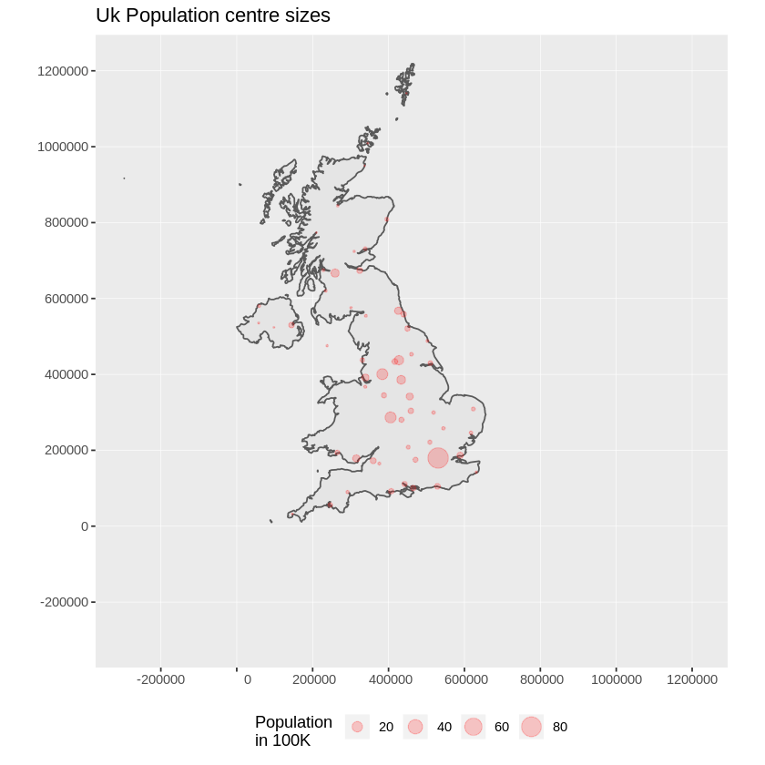

R gyorstalpaló¶
Az R egy szabad szoftver környezet statisztikai számításokhoz és grafikákhoz.
Ez a gyorstalpaló leírja:
- R használata egyszerű számításokhoz
- Adatok betöltése shape fájlból és megjelenítése
- koordináta transzformáció végrehajtása
- pontok megjelenítése a térképen
Indítsa el az R-t¶
Az R lényegében egy parancssori program, bár a grafikus felhasználói felületek is rendelkezésre állnak. Beír egy sornyi kódot a parancssorba, megnyomja a return gombot, és a R interpreter kiértékeli azt, és kiírja az eredményt.
Javaslat
Ne tartson a parancssortól - nagy lehetőségek forrása. A fel és le nyilakat használva visszahívhatja a korábbi parancsokat, így kijavíthatja a hibákat. Nyomjon CTRL.C-t, ha elakadt és a promptot szeretné visszakapni.
Válassza a menüből . Az R-t futtató terminálablak jelenik meg.
Egyszerű aritmetikai számításokkal kezdheti.
> 3*2
[1] 6
> 1 + 2 * 3 / 4
[1] 2.5
> sqrt(2)
[1] 1.414214
> pi * exp(-1)
[1] 1.155727
Az aritmetikai, trigonometriai és statisztikai függvények teljes készletét beépítették és további ezrek érhetők el a CRAN archívum csomagjaiból.
Az R-ben a fő prompt a >, de van egy folytató prompt +, mely akkor jelenik meg ha az R további inputot vár teljes kifejezéshez. Akkor látja, ha elfelejt megadni egy záró szögletes vagy kerek zárójelet.
> sqrt(
+ 2
+ )
[1] 1.414214
Adatok előállítása¶
Lehet, hogy csodálkozik, hogy mit csinálhat a titokzatos «egy» a szögletes zárójelben az outputban. Ez azt jelenti, hogy az eredmény egy szám. Az R képes az adatokat egydimenziós vektorokban, kétdimenziós mátrixokban, és a többdimenziós tömbökben tárolni. Sok olyan függvény van, amely képes ezeket generálni. Íme egy egyszerű sorozat:
> seq(1, 5, len=10)
[1] 1.000000 1.444444 1.888889 2.333333 2.777778 3.222222 3.666667 4.111111
[9] 4.555556 5.000000
Most láthatja, hogy a [9] azt jelenti, hogy a 4.555 a kilencedik érték a vektorban.
Ha mátrixot hoz létre sor és oszlop címkéket kap:
> m = matrix(1:12, 3, 4)
> m
[,1] [,2] [,3] [,4]
[1,] 1 4 7 10
[2,] 2 5 8 11
[3,] 3 6 9 12
A mátrix elemeinek eléréséhez szögletes zárójelek között, vesszővel elválasztva adjuk meg a sor és oszlop indexeket. Hagyja üresen az egyik indexet a a teljes sor vektorként megkapásához. Használjon egy vektor indexet több sor vagy oszlop kivételéhez mint egy kisebb mátrix.
> m[2,4]
[1] 11
> m[2,]
[1] 2 5 8 11
> m[,3:4]
[,1] [,2]
[1,] 7 10
[2,] 8 11
[3,] 9 12
Az adatkeretek olyan adatstruktúrák, melyek az RDMS-ekben, mint például Postgres vagy MySQL, található adatstruktúrákat tükrözik. Minden sorra mint egy rekordra gondolhatunk, oszlopokkal mint a mezők az adatbázisban. Mint az adatbázisban, minden mezőnek azonos típusúnak kell lennie minden rekordban.
Sok szempontból ezek ugyanúgy működnek, mint a mátrixok, de megkaphatja és beállíthatja az oszlopokat név alapján is a $ jelölés használatával:
> d = data.frame(x=1:10, y=1:10, z=runif(10)) # z is 10 random numbers
> d
x y z
1 1 1 0.44128080
2 2 2 0.09394331
3 3 3 0.51097462
4 4 4 0.82683828
5 5 5 0.21826740
6 6 6 0.65600533
7 7 7 0.59798278
8 8 8 0.19003625
9 9 9 0.24004866
10 10 10 0.35972749
> d$z
[1] 0.44128080 0.09394331 0.51097462 0.82683828 0.21826740 0.65600533
[7] 0.59798278 0.19003625 0.24004866 0.35972749
> d$big = d$z > 0.6 # d$big is now a boolean true/false value
> d[1:5,]
x y z big
1 1 1 0.44128080 FALSE
2 2 2 0.09394331 FALSE
3 3 3 0.51097462 FALSE
4 4 4 0.82683828 TRUE
5 5 5 0.21826740 FALSE
> d$name = letters[1:10] # create a new field of characters
> d[1:5,]
x y z big name
1 1 1 0.44128080 FALSE a
2 2 2 0.09394331 FALSE b
3 3 3 0.51097462 FALSE c
4 4 4 0.82683828 TRUE d
5 5 5 0.21826740 FALSE e
Térképi adatok betöltése¶
Sok csomag létezik a téradatok kezelésére és statisztikákra. Néhányat bevettünk ide és néhány letölthető a CRAN-ról.
Két shape fájlt fogunk betölteni itt - az országhatárok és lakott helyek a Natural Earth adatokból. Két kiegészítő csomagot használunk a térbeli funkcionalitás eléréséhez:
> library(sf) # Simple Features manipulation Library
> library(ggplot2) # Plotting library
> countries <- st_read(dsn = "~/data/natural_earth2/ne_10m_admin_0_countries.shp")
> places <- st_read(dsn = "~/data/natural_earth2/ne_10m_populated_places.shp")
> ggplot(countries) + geom_sf()
Ez egy egyszerű világtérképet ad nekünk:

Ha egy OGR adathalmazt olvasunk be az R-be, egy olyan objektumot kapunk, amely sok sok szempontból úgy viselkedik, mint egy adatkeret. Az admin mezőt használhatjuk, hogy a világ adatok részhalmazát kapjuk, csak az Egyesült Királyságot:
> uk <- countries[countries$admin == 'United Kingdom',]
> ggplot(uk) + geom_sf()
Ez egy kicsit lapítottnak tűnik mindenkinek, aki itt lakik, mivel jobban ismerjük azt a koordináta-rendszert, amely a szélességi körünkhöz igazított. Jelenleg nem rendeltünk még az objektumhoz koordináta-rendszert.
Az objektumhoz hozzá kell rendelnünk egy vetületi rendszert, mielőtt transzformálhatnánk az sf::st_transform függvénnyel az sf csomagból, Az EPSG:27700-be transzformálunk, mely Nagy-Britannia referencia rendszere:
> ukos <- st_transform(uk,27700)
> ggplot(ukos) + geom_sf()

Ez kirajzolja a transzformált alaptérképet. Most hozzá akarunk adni néhány pontot a lakott területek adathalmazból. Ismét egy részhalmazt hozunk létre a kívánt pontokból és Ordanance Survey koordinátákba transzformáljuk:
> ukpop <- places[places$SOV0NAME == 'United Kingdom',]
> ukpop <- st_transform(ukpop,27700)
Ezeket a pontokat hozzáadjuk az alaptérképhez, a méretüket a népesség négyzetgyökére skálázzuk (mert ez a szimbólumot népesség területarányosra állítja), állítsuk a színt pirosra és tömör kitöltésű foltra:
> ggplot() +
> geom_sf(data = ukos) + # add UK shape to the map
> geom_sf(data = ukpop, # add the Populated places
> aes(size = ukpop$POP_MAX/100000), # fix size of points (by area)
> colour = 'red', alpha = 1/5) + # set points colour and transparency
> coord_sf(crs = 27700, datum= sf::st_crs(27700), # set a bounding box
> xlim = st_bbox(ukos[c(1,3)]), # for the map
> ylim = st_bbox(ukos[c(2,4)])
> ) +
> ggtitle('Uk Population centre sizes') + # set the map title
> theme(legend.position = 'bottom') + # Legend position
> scale_size_area(name = 'Population \nin 100K') # 0 value means 0 area + legend title
és megjelenik a végső képünk:
Javaslat
Az R-ből kilépéshez írja be q() és return. Az R megkérdezi, hogy menteni akarja-e a munkaterületét mint egy R adat-kép fájl. Amikor az R-t olyan könyvtárból indítja, ahol egy .RData fájl található, visszaállítja abból az adatokat.
Matricák¶
Korábban az R csomagok dokumentációja minden függvényhez tömören megírt súgó oldalakra irányult. Most a csomag szerzőit arra bátorítjuk, hogy egy «matricát» írjanak mint a csomag egy barátságos bemutatása. Ha a vignette() függvényt argumentumok nélkül futtatja a rendszerén található matricák listáját kapja. Próbálja ki a vignette("sf1") parancsot egy technikai bevezetőhöz az R térbeli csomagjához.
Mi a következő?¶
Általános információkhoz az R-ről próbálja meg a hivatalos Introduction to R vagy bármely dokumentációt az R Project fő oldaláról.
Az R térbeli vonatkozásairól további információhoz a legjobb kezdőpont valószínűleg az R Spatial Task View
Érdemes megnéznie az „R-Spatial <<https://www.rspatial.org> « _ oldalt is.